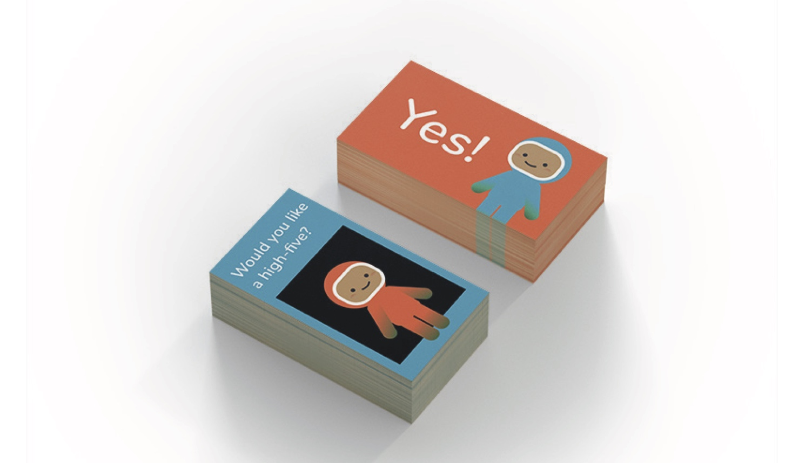

Emilia Tongson
Teach Personal Space
ORIGINAL GAME DESIGN, BRANDING, SOCIAL CAUSE
How do you teach kids the concept of bodily consent in a fun, friendly way?
This project is taken from a class project created while at the University of California, Davis, with the goal of creating a campaign that centers a social cause or issue.
The team: Sierra Sparre, Brantlee Griffith, Alexis Cruz-Rosales
Responsibilities included: ideation, design, and creative direction
Goal: Prevent sexual assault and harassment by teaching consent.
Idea: Create a method of teaching targeted at children at an age before exposure to sexual violence in popular media.
Execution: Design a game that highlights the importance of asking, while matching actions and intentions with others, as well as normalizing rejection.
The result--Mission Permission--is a two-person matching game, in which players both ask each other for consent on the physical or non-physical action, should they both draw a matching pair. The non-matching pairs are used as well,
each player making separate piles on top of the mystery planet cards.
The game is designed with an astronaut theme as a play on the word "space".
The brand uses gender-neutral colors to appeal to all children. Additionally, further iteraitons of the astronaut characters Ask and Listen are also shown in different skin tones to reflect diversity.
The following below are early iterations of the card game.
The following below are iterations developed after the scope of the class. The dynamic of the latest version is modified by having no winners or losers based on the matched cards. Players are encouraged to compile their cards, both matched and discarded, on top of the mystery planet cards. The winner guesses which planet is laid facedown, enabling multiple winners.